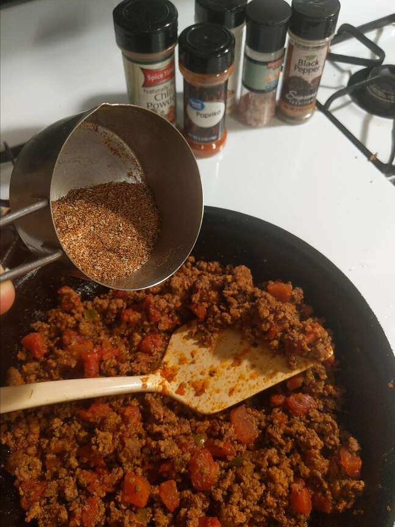

Taco Seasoning

Make it yourself
Make taco seasoning yourself.
Ingredients
- 1 tablespoon chili powder
- 1 1/2 teaspoons ground cumin
- 1 teaspoon sea salt
- 1 teaspoon ground black pepper
- 1/2 teaspoon ground paprika
- 1/4 teaspoon garlic power
- 1/4 teaspoon onion powder
- 1/4 teaspoon crushed red pepper flakes
- 1/4 teaspoon dried oregano
Directions
-
Mix together chili powder, cumin, sald, pepper,
paprika, garlic powder, onion powder, red pepper flakes,
and oregano in a small bowl.